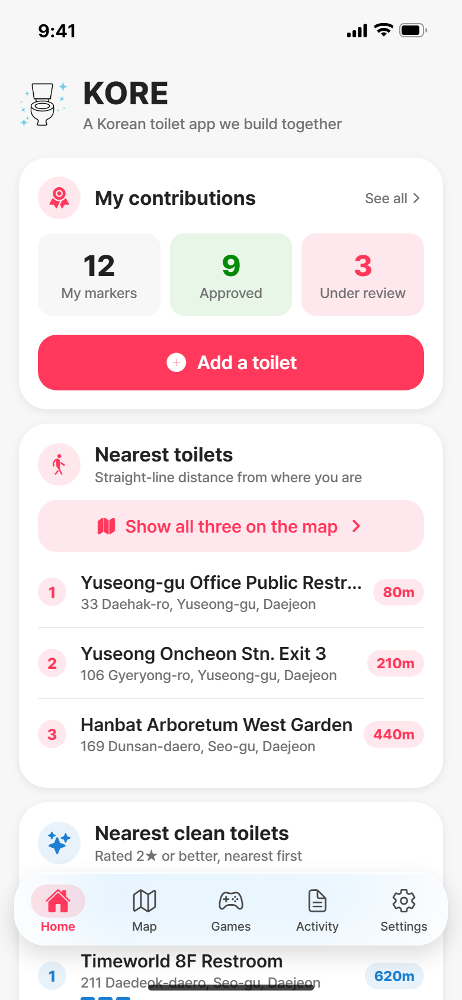
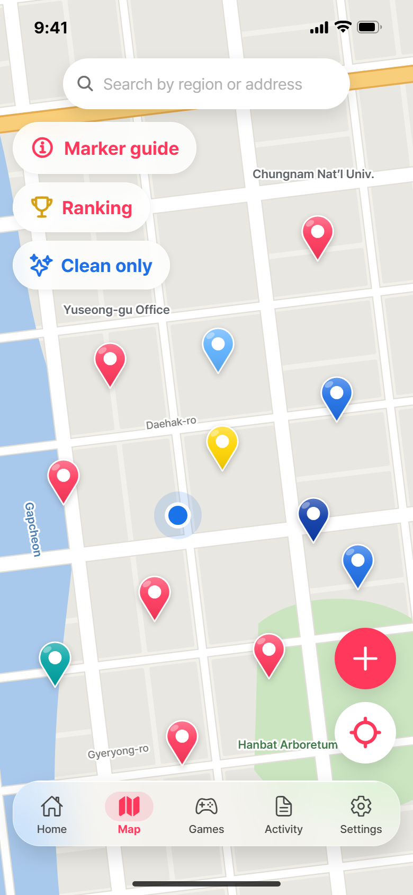
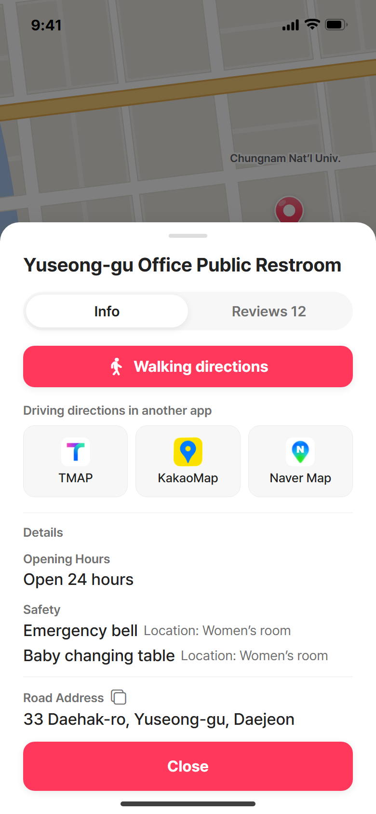
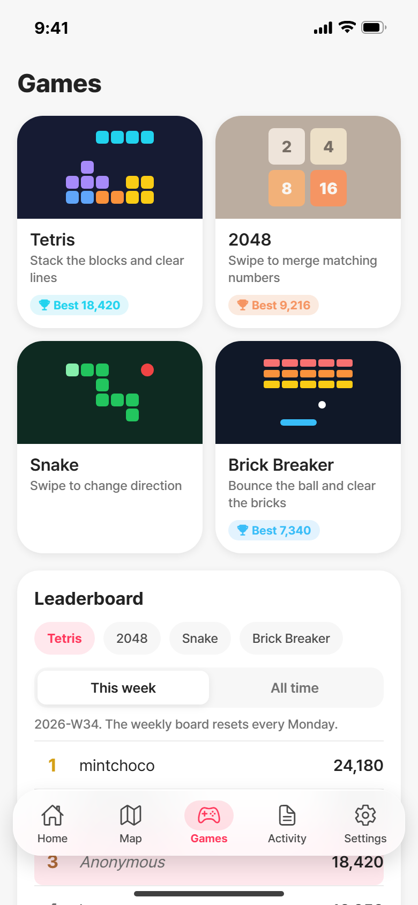

🚻
52,182 public restrooms
The government's entire national public-restroom dataset — opening hours, emergency bells, baby changing tables and all.
Korean open dataPublic restrooms, libraries and cafés — all on one map, in your own language. Open the app and you see where you are and what's closest.
Free · iOS & Android · No sign-up needed

52,182 public restrooms · 3,479 libraries · 4,382 cafés · 1,200 individually verified restrooms — plus everything travellers keep adding.
Korea's official open data, plus libraries, cafés and restrooms we verified one by one. It all ships inside the app, so the map is full the moment it opens.
The government's entire national public-restroom dataset — opening hours, emergency bells, baby changing tables and all.
Korean open dataEvery public library in Korea. Staffed public buildings anyone may walk into — the safest bet when you're in a hurry.
Korean open dataStarbucks, A Twosome Place and Hollys stores, with opening hours, store photos and parking notes.
Published store dataRestrooms found in public posts and checked one at a time — floor, soap and paper, the things official data never records.
Collected · verifiedNobody studies a map while they are in a hurry. So in KORE a single colour carries both what kind of restroom it is and how clean it is.

Tap a pin and the buttons that get you there sit at the top, with the photos above them when there are any. Below that, every restroom reads in the same order: whether you can get in, then what it is like inside.

Nothing to hunt for. Finding is in Map, your own record is in Activity, everything else is in Settings.
The three nearest restrooms, the three nearest clean ones, and everything you've added.
Search, pins, details, adding and editing. Tap the tab again and it always comes back to you.
Four minigames for the time you spend waiting, with weekly and all-time boards.
The status of everything you proposed, plus the messages you sent and the replies.
Language, nickname, sign-in and password, account deletion — one screen.
You can contribute without an account. Submissions are reviewed, published, and counted on the contributor board.
Drop a point, add a name and a photo. Write it in any language — it is translated into the other eight.
A human checks each one. The decision comes back to you in the Activity tab.
Once approved, it is on every user's map from that moment.
A public ranking by approved submissions. Pick a nickname, or be listed anonymously.
The restroom in your regular building, saved as a teal pin on your map alone. The one feature that needs an account.
Rate a place and say a word about it in your own language — the next traveller reads it in theirs.
Write from inside the app and the reply lands in your Activity tab. No account required.
Four games nobody needs to read instructions for. The weekly board starts over every Monday; the all-time one just keeps going.

Restroom names, addresses, facility details and reviews are all translated. The app speaks your language from the moment it opens.
Yes. No subscription and no in-app purchases.
No. Browsing the map, adding restrooms, suggesting edits, writing reviews and competing on the game boards all work without signing in. The only feature that needs an account is the private "only me" marker.
It's optional. With it, the map opens where you are and shows distances. Location is used only while the app is open — never in the background.
Tap the pin and send an edit suggestion. It is reviewed, applied, and the outcome comes back to you in the Activity tab.
Install it, allow location, and you're set. It's the app you'll be glad you already had.